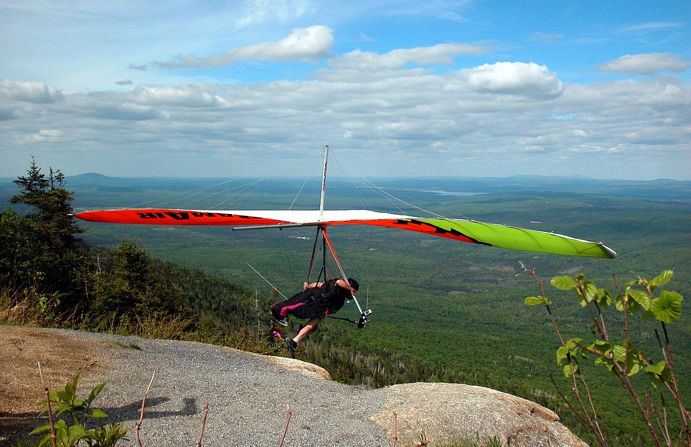
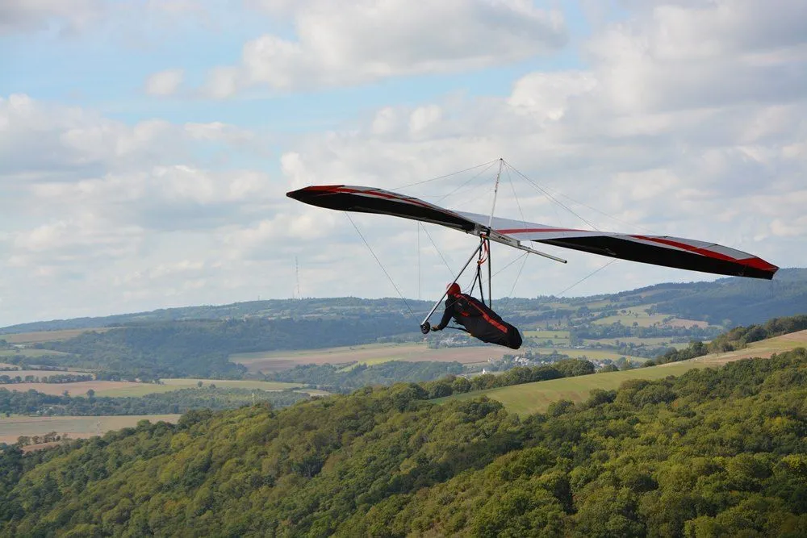
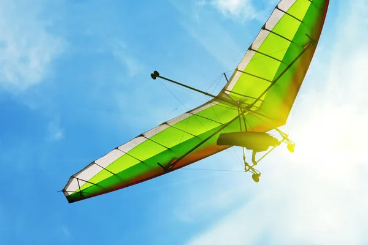

Трохи інформації для перегляду


Що таке дельтаплан і з чим його їдять
Дельтаплан — легкий, важчий за повітря безмоторний безхвостий літальний апарат, виконаний за схемою з нерухомим стрілоподібним крилом, керований зміщенням центру мас за рахунок переміщення пілота щодо точки підвіски. Спортивне використання дельтапланів переросло в окремий вид спорту — дельтапланеризм. Дельтаплани також застосовували і застосовують для вирішення спеціальних задач, у тому числі — у космонавтиці.

Дельтапланеризм
Дельтапланеризм — повітряний вид спорту, в якому пілот керує безмоторним засобом, що зветься дельтаплан.
Дельтапланеризм традиційно вважається небезпечним видом спорту. Властивий деяким людям азарт, небезпека ковзання на милість тепловим та вітровим течіям призводять до смертельних результатів, багато серйозних травм протягом багатьох років мають навіть досвідчені пілоти. У сукупності з поганою рекламою це вплинуло на популярність дельтапланеризму.
Кількість нещасних випадків з польотом на дельтаплані значно знижується після навчання пілотів. Програми навчання розроблені для пілотів сьогодні з акцентом на політ в безпечних межах, а також дисципліни припинення польотів, коли погодні умови несприятливі (наприклад, є надлишок вітру чи ризик високої хмарності).
Додаткова інформація

Історія дельтапланів
Більшість ранніх конструкцій планера не забезпечували безпечного польоту. Проблема була в тому, що піонери польоту недостатньо розуміли основні принципи того, як правильно повторити принцип роботи пташиного крила.

Виробники дельтапланів
На даний момент в світі виробників спортивних дельтапланів не дуже багато, а на ринку домінує українська компанія "Аерос".

Рекорди та цікаві факти
Світові рекорди (станом на 2005 р.) для «вільної відстані» належать Манфреду Румеру з результатом 700,6 км у 2001 р. і Майклу Барберу — 704 км від 19 червня 2002 р. у Сапата, Техас.